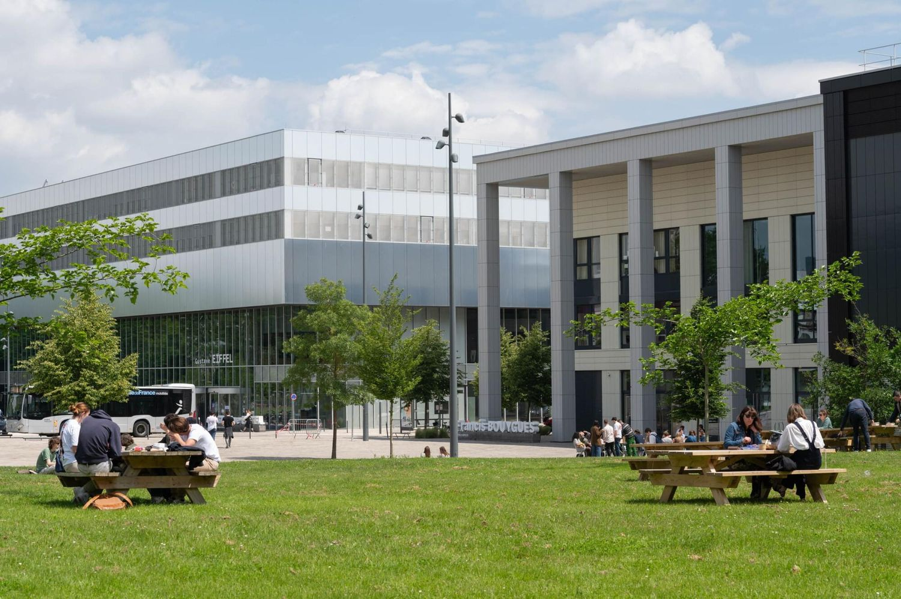
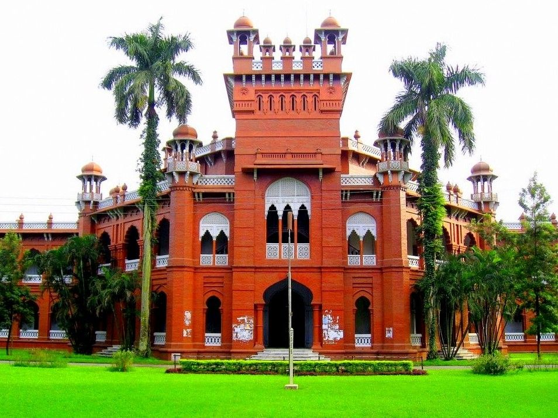
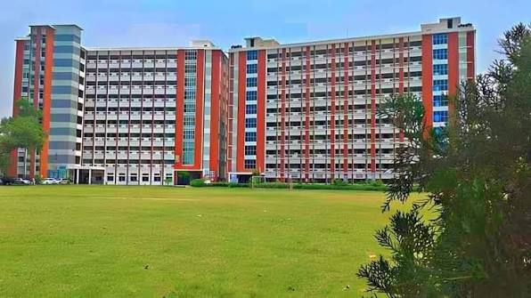
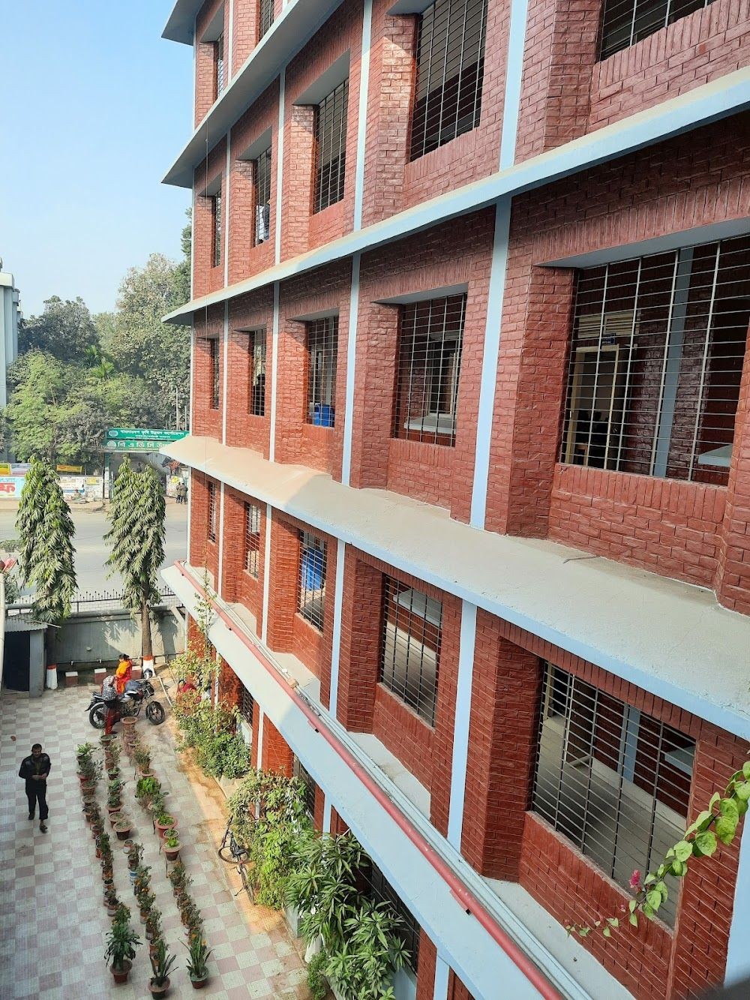
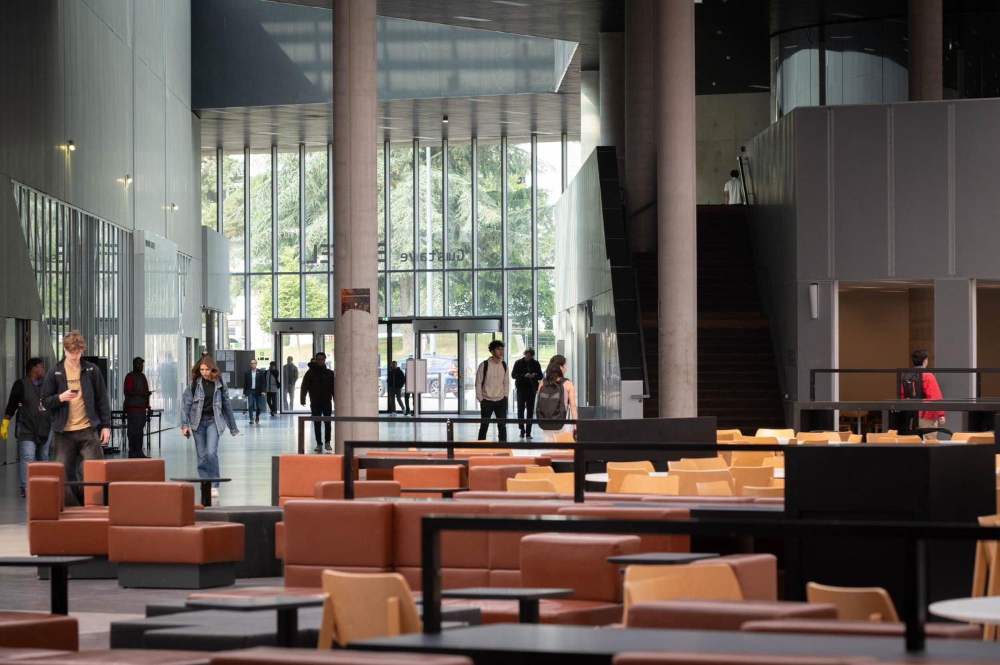
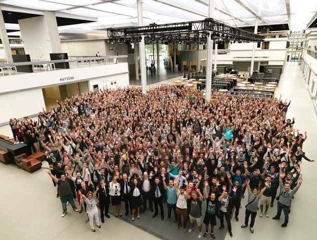

Education
Degrees and certificates
December 2026
Paris, France

MSc Operations Research & Risk Analytics (M2)
Graduate programme in operations research covering stochastic programming, mixed-integer optimisation, reliability engineering and decision analysis under uncertainty. Master's thesis on resilient omnichannel distribution with two-stage stochastic programming and CVaR, supervised by Prof. Jakob Puchinger.
| Status | Scholarship |
|---|---|
| In progress | Institutional Scholarship Holder, awarded on academic merit |
December 2024
Dhaka, Bangladesh

BSc Industrial & Production Engineering
Undergraduate engineering degree covering operations management, production systems, quality engineering and industrial statistics. Three industrial placements completed during the programme, in food processing, steel manufacturing and textiles.
| Result | Standing |
|---|---|
| CGPA 3.50 / 4.00 | 87th percentile in the department |
Dhaka, Bangladesh

Higher Secondary School Certificate
Higher secondary study completed in 2019 with a perfect grade point average and a merit-based scholarship.
| Result | Distinction |
|---|---|
| GPA 5.00 / 5.00 | Merit-based scholarship |
Dhaka, Bangladesh

Secondary School Certificate
Secondary school completed in 2017 with a perfect grade point average and a merit-based scholarship.
| Result | Distinction |
|---|---|
| GPA 5.00 / 5.00 | Merit-based scholarship |
Scholarships and academic distinctions
- Institutional Scholarship Holder, CentraleSupélec, awarded on academic merit for the MSc programme.
- Merit-based scholarship, higher secondary college.
- Merit-based scholarship, secondary school.
- 75 percent merit-based scholarship in the supply chain professional programme, awarded with a top ten placement in the BIHRM Supply Chain Contest.
- Bangladesh Mathematical Olympiad, regionally selected and competed at national level, 2016.
Campus

